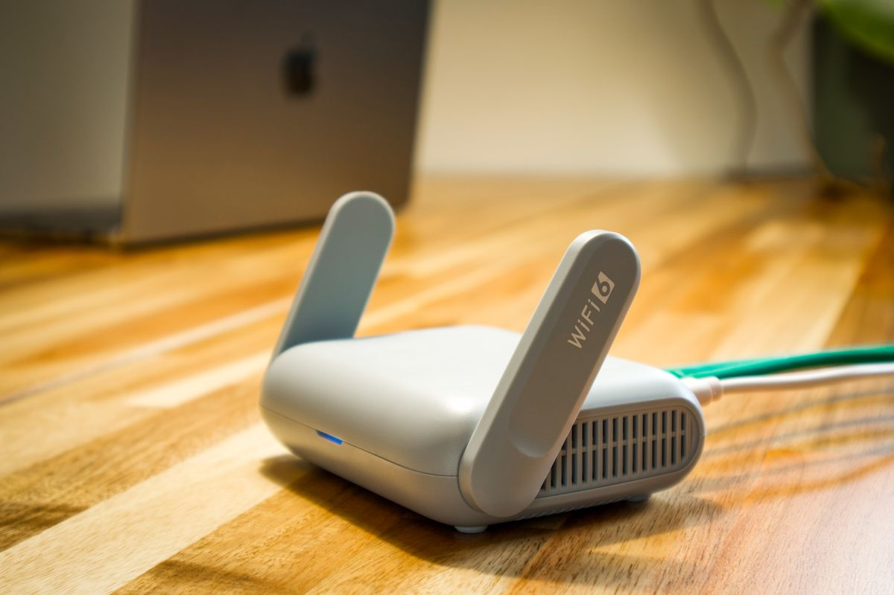

Lupa password WiFi itu kejadian yang biasa banget. HP-mu sudah otomatis tersambung tiap masuk rumah, tapi pas teman main dan minta password, kamu bengong karena tidak pernah hafal. Tenang, kamu tidak perlu reset router atau menelepon teknisi. HP kamu menyimpan password itu, dan kamu bisa melihatnya lagi dalam waktu kurang dari satu menit. Cara per Oktober 2026 ini berlaku untuk Android maupun iPhone, tanpa root dan tanpa aplikasi tambahan.
Cara Melihat Password WiFi di HP Android
HP Android versi 10 ke atas punya fitur bawaan untuk membagikan password WiFi. Kamu tidak perlu akses root, cukup buka kunci layar seperti biasa. Ini langkahnya:
- Buka aplikasi Pengaturan di HP-mu.
- Ketuk Jaringan dan internet, lalu Wi-Fi atau Internet (di HP Samsung namanya Koneksi).
- Cari nama WiFi yang sedang tersambung atau pernah tersambung, lalu ketuk ikon gear di sebelah namanya. Kalau tidak sedang tersambung, buka dulu bagian Jaringan tersimpan.
- Ketuk tombol Bagikan atau Share. HP akan meminta sidik jari, PIN, atau pola kunci layar.
- Sesudah kunci terbuka, layar menampilkan kode QR. Di banyak HP, password juga tertulis sebagai teks persis di bawah kode QR itu.
Kalau HP-mu hanya menampilkan kode QR tanpa teks password, kamu tetap bisa membaca passwordnya. Foto atau screenshot kode QR itu, lalu pindai gambarnya dengan Google Lens atau aplikasi pemindai QR. Hasil pindaian akan menunjukkan isi kode QR termasuk kolom password di dalamnya. Catatan penting: kode QR WiFi sama saja seperti password dalam bentuk gambar, jadi jangan dibagikan sembarangan ke orang yang tidak perlu.

Cara Melihat Password WiFi di iPhone
Di iPhone caranya bahkan lebih langsung, asalkan HP-mu sudah memakai iOS 16 ke atas. Apple menambahkan fitur ini mulai iOS 16, jadi kalau iPhone-mu masih versi lama dan belum di-update, opsi ini tidak akan muncul. Ini langkahnya:
- Buka Pengaturan, lalu masuk ke menu Wi-Fi.
- Ketuk ikon (i) di sebelah nama jaringan WiFi yang ingin dilihat passwordnya. Berlaku untuk jaringan yang sedang tersambung maupun yang pernah tersambung dan tersimpan.
- Ketuk kolom Password. Isinya masih berupa titik-titik tersembunyi.
- iPhone meminta autentikasi lewat Face ID, Touch ID, atau kode sandi layar.
- Sesudah autentikasi berhasil, password langsung tampil sebagai teks. Ketuk sekali untuk menyalinnya ke clipboard.
Mau melihat password jaringan lama yang sudah lama tidak disambungkan? Di menu Wi-Fi, ketuk Edit di pojok kanan atas, buka kunci dengan Face ID atau kode sandi, lalu pilih nama jaringan dari daftar jaringan tersimpan. Kalau iPhone-mu sudah memakai iOS 18 atau lebih baru, ada jalan pintas lain: buka aplikasi Passwords, masuk ke tab Wi-Fi, pilih nama jaringannya, lalu ketuk kolom Password untuk melihatnya. Fungsinya sama, hanya letak menunya yang lebih rapi.
Kalau Menu Password Tidak Muncul, Coba Cara Ini
Kadang HP menolak menampilkan password dengan alasan keamanan atau versi sistem yang terlalu lama. Jangan panik, masih ada dua jalan cadangan yang sah.
Pertama, lihat router-nya langsung. Kebanyakan router mencantumkan nama WiFi bawaan dan passwordnya di stiker label yang menempel di bodi router. Ini berlaku selama password belum pernah diganti oleh pemiliknya. Kedua, buka halaman admin router. Sambil tersambung ke WiFi itu, ketik alamat router (biasanya tertulis di stiker label juga) di browser, masuk dengan username dan password admin, lalu cari menu pengaturan Wireless untuk melihat passwordnya. Cara kedua ini hanya boleh dipakai di router milikmu sendiri atau atas izin pemiliknya.

Satu Peringatan Soal Keamanan
Password yang sudah kamu lihat ini ibarat kunci rumah. Jangan kirim screenshot kode QR atau password teks ke grup chat yang ramai anggotanya, karena siapa pun yang membacanya bisa memakai WiFi itu sampai passwordnya diganti. Kalau teman minta akses, lebih aman biarkan dia memindai kode QR langsung dari layarmu, atau aktifkan jaringan tamu di router bila router-mu mendukung fitur itu.
Intinya, lupa password WiFi bukan masalah besar lagi. Android menunjukkan lewat menu Bagikan plus kode QR, iPhone menunjukkannya lewat kolom Password di pengaturan Wi-Fi. Simpan artikel ini, siapa tahu besok ada tamu yang minta password.
Sumber dan Info Resmi
Langkah-langkah di artikel ini merujuk ke sumber berikut, yang sudah diverifikasi isinya per Oktober 2026:
- Cashify: cara melihat password WiFi tersimpan tanpa root: Android 10 ke atas punya fitur Share tanpa root, kode QR plus teks password tampil sesudah buka kunci layar.
- TrendsWheel: melihat password WiFi tersimpan di Android tanpa root: langkah menu Share, sebagian HP hanya menampilkan kode QR, dan router umumnya mencantumkan password bawaan di stiker label.
- Swann: panduan nama dan password Wi-Fi dari Android atau iOS: iOS 16 ke atas bisa melihat lewat menu Wi-Fi, ketuk ikon info lalu kolom Password dengan autentikasi; iOS lama tidak punya cara bawaan.
- Switching to Mac: melihat password WiFi di iPhone: detail langkah iPhone iOS 16 ke atas; iOS 18 ke atas ada aplikasi Passwords dengan tab Wi-Fi; hanya berlaku untuk jaringan yang tersimpan.